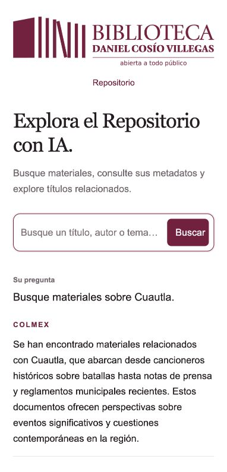

BIBLIOTECA DANIEL COSÍO VILLEGAS · 9 DE OCTUBRE DE 2026
El chatbot ya consulta una capa de conocimiento OKF
La versión local incorpora el conocimiento documentado del repositorio y una conexión más amplia a su búsqueda avanzada. Sigue siendo un asistente general para descubrir materiales, consultar descripciones, explorar relaciones y formular comparaciones basadas en la información pública disponible.
Abrir el chatbot local · Descargar el paquete de instalación · Descargar el conocimiento OKF · Consultar las pruebas detalladas
Qué se entregó
El conocimiento incluye las 197 propiedades de metadatos declaradas en el código, 23 clases de materiales y el perfil de colecciones, sus módulos compartidos y términos añadidos a formularios, además de siete autoridades locales de valores. Cada concepto conserva su fuente. Se documentan las diferencias entre autoría y personas tratadas, fechas y períodos, tipos de material, relaciones, descripciones y texto completo.
La información se organiza en archivos legibles que el equipo puede revisar y mantener. Se conservaron las ambigüedades encontradas: por ejemplo, las etiquetas de entrevistador y entrevistado parecen intercambiadas, y la fecha catalogada no tiene el mismo sentido claro para todos los materiales. La extracción automática verifica lo que aparece en el código; no sustituye la revisión de catalogadores.
El chatbot usa este conocimiento para elegir campos, combinar condiciones, aplicar filtros y rangos de años, ordenar y, cuando la pregunta lo requiere, reunir varias búsquedas. Las comparaciones incluyen enlaces a los registros utilizados y explicitan que trabajan con una muestra. Los resultados de búsquedas diferentes se reúnen sin duplicar fichas ni sumar sus conteos como si fueran un total único.
Cómo trabaja ahora
Primero interpreta la intención y el idioma de la pregunta. Después consulta las definiciones pertinentes y decide qué evidencia necesita. Ejecuta la búsqueda o las búsquedas necesarias y explica lo encontrado a partir de sus resultados. Una pregunta general sobre un tema comienza de forma amplia; una solicitud precisa puede utilizar autoría, título, materia, condiciones combinadas o fechas.
Puede traducir conceptos al lenguaje del catálogo sin cambiar el idioma de la respuesta. Si una búsqueda vacía contiene condiciones añadidas por el propio asistente, puede retirar esas ampliaciones conservando las condiciones explícitas, filtros y fechas. No todas las búsquedas vacías pueden ampliarse sin cambiar la pregunta: en ese caso debe explicar el alcance de la consulta.
Qué se comprobó
| Comprobación | Resultado observado |
|---|
| Pruebas automatizadas | 26 aprobadas, sin fallos: búsqueda, condiciones, paginación, exportación, fuentes, conocimiento y controles existentes. |
| Migración, 2000–2020 | 194 coincidencias; las fechas de los primeros registros se encontraban dentro del rango solicitado. |
| Migración y remesas, 2000–2020 | 6 coincidencias, manteniendo ambos conceptos y el rango. |
| Autoría: Octavio Paz | Se usó el campo de autoría y se recuperaron 3 registros que lo incluyen como creador; no se confundió la búsqueda con una búsqueda sobre él. |
| Idiomas | La pregunta inglesa sobre danzantes aztecas se buscó con conceptos españoles y se respondió en inglés. La planificación francesa tradujo migration a migración. |
| Comparación e investigación | Se reunieron registros de búsquedas sobre migración y remesas, con fuentes y alcance limitado; los totales no se sumaron. |
| Pasaje sin coincidencias | La frase exacta se buscó y devolvió cero; no se inventó una página. |
| Enlaces e interfaz | Cinco fichas de libros, notas de prensa y legislación respondieron correctamente. Los metadatos abren debajo del registro, se conserva la lista al cargar más y se avisa antes de sustituirla por similares. |
| TXT completo | La búsqueda de Cuautla pasó de 5 a 10 resultados sin retirar los anteriores y descargó los 147 registros, con 147 enlaces únicos. |
Los números son observaciones de las pruebas de esta entrega. Pueden cambiar al actualizarse el repositorio y no están fijados en el programa.
Problemas encontrados y límites que permanecen
Las primeras pruebas detectaron cambios indebidos de idioma, respuestas que explicaban límites sin intentar buscar y una respuesta de diagnóstico demasiado extensa que se cortaba. Se ajustaron la planificación, las instrucciones y los límites de generación; los casos volvieron a ejecutarse.
La evaluación semántica sigue siendo necesaria. Una respuesta de calidad de metadatos aún generalizó demasiado la integridad de algunos campos e interpretó una fecha ambigua con más seguridad de la debida. Los enlaces y los datos recuperados ayudan a comprobarla, pero este chatbot no es una auditoría definitiva de calidad. No se debe utilizar su diagnóstico para corregir registros automáticamente.
Las comparaciones dependen de descripciones e índices y de una muestra acotada. El chatbot no recibe automáticamente los textos completos, no verifica citas o páginas, no normaliza identidades de autores ni garantiza una cronología absoluta con fechas faltantes o intervalos. Los campos expuestos en el formulario avanzado tampoco prueban por sí solos que todos estén poblados o funcionen igual en cada perfil.
Qué sigue antes de una instalación institucional
El equipo debe revisar el significado de los campos y las ambigüedades, evaluar preguntas representativas y validar el paquete en el entorno de alojamiento: contenedor, versión de ejecución, conexión a Hyrax, publicación bajo /chatbot, carga esperada y avisos institucionales de tratamiento de consultas. La guía de instalación ya incluye el conocimiento OKF. No se realizó un despliegue público ni se modificó ningún registro.
La aplicación conserva el entorno privado de Gemini existente. El paquete entregado no contiene la clave ni datos de sesión. Las consultas y el contexto necesario se envían a Gemini; el conocimiento local no convierte todo el procesamiento en local.
Vista de la versión local
